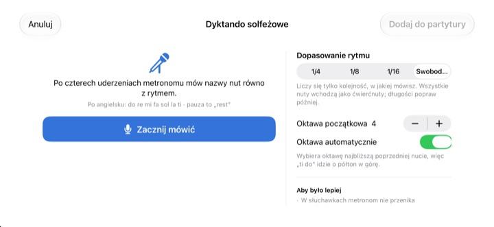
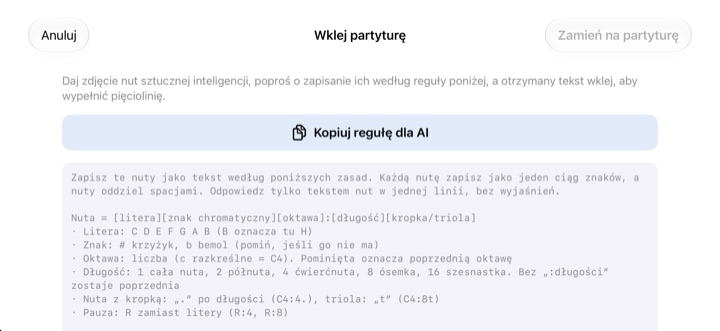

Przestań liczyć w głowie.
Posłuchaj.
Przepisz dwa takty, na których się potykasz, i stuknij odtwarzanie. Po jednym takcie odliczania aplikacja zagra je z metronomem, dokładnie w zapisanym rytmie i wysokości.
Wszystkie funkcje są bezpłatne. Na iPhone’a i iPada.

Zapisz kilka nut i posłuchaj
Przytrzymaj pięciolinię i przesuwaj w górę lub w dół, żeby zmienić dźwięk, a potem puść, żeby wstawić nutę. Naciśnij „Graj”, a po takcie odliczania usłyszysz całość. Będzie dźwięk, sprawdź głośność.
Znowu pogubiłeś się w liczeniu?
Ósemka z kropką, potem szesnastka, a zaraz obok triola. Wystukujesz to na kolanie i w połowie taktu wszystko się rozjeżdża. Wieczorem przed próbą chóru zwykle nie ma też pod ręką pianina. W StaffSinger wystarczy przepisać te dwa takty, żeby usłyszeć dokładny rytm i wysokość.
Rytm i wysokość dokładnie jak w nutach
Po takcie odliczania muzyka gra z kliknięciami metronomu, a brzmiąca nuta świeci na pomarańczowo. Tempo od 40 do 200 BPM, metrum 4/4, 3/4, 2/4, 6/8, 2/2 lub 3/8.
Nuty na tej samej mierze brzmią razem jako akord, a zapisać można do trzech głosów. Są klucze wiolinowy, altowy i basowy oraz znaki przykluczowe.

Powiedz nazwy nut, a staną się nutami
Po czterech kliknięciach metronomu mów do re mi do taktu, a nuty pojawią się na pięciolinii. Jeśli trafiasz w miarę, zapisze się też wartość: ćwierćnuty, ósemki lub szesnastki. Pauzę oznacz słowem rest.
Nazwy nut wymawiaj po angielsku. Mowa jest rozpoznawana tylko na urządzeniu i nie jest zapisywana.

Zdjęcie nut dla AI, wynik wklej
Stuknij Kopiuj regułę dla AI, przekaż ją AI razem ze zdjęciem nut i wklej tekst, który dostaniesz. Pięciolinia wypełni się sama. Format znajdziesz w tabeli poniżej.
Możesz też sfotografować papierowe nuty, trzymać zdjęcie na ekranie i przepisywać, patrząc na nie.

Trzy kroki na start
- 1
Wybierz trudne takty
Aplikacja otwiera się z pustą pięciolinią na dwa takty.
- 2
Zapisz nuty
Naciskaj pięciolinię albo graj na klawiaturze fortepianu.
- 3
Stuknij odtwarzanie
Odliczanie, a potem gra z metronomem.
Format tekstu do wklejenia
- C4:4
- C w oktawie 4, ćwierćnuta (środkowe C to C4)
- D:8
- Bez oktawy zostaje poprzednia
- F#4:8 · Bb4:4
- # to krzyżyk, b to bemol
- E4
- Bez „:wartości” zostaje poprzednia
- :1 · :2 · :4 · :8 · :16
- cała nuta, półnuta, ćwierćnuta, ósemka, szesnastka
- C4:4.
- nuta z kropką
- C4:8t
- triola
- R:4 · R:8
- pauzy
Przycisk Kopiuj regułę dla AI w aplikacji kopiuje dokładnie te instrukcje. Nuty oddzielaj spacjami.
Wszystkie funkcje są bezpłatne
Bezpłatnie
- Zapis na pięciolinii i klawiatura na dwie oktawy
- Odtwarzanie z odliczaniem i metronomem
- Akordy i trzy głosy
- Znaki przykluczowe i trzy klucze
- Dyktowanie nazw nut głosem
- Wklejanie tekstu i zdjęcie pomocnicze
Wesprzyj twórcę
- W Ustawieniach możesz wysłać mały napiwek
- Napiwek nie odblokowuje żadnych funkcji
To nie subskrypcja. Każdy napiwek to jednorazowa płatność.
Bez reklam i bez zakładania konta.
Pytania
Jak dodawać nuty?
Najpierw wybierz wartość na pasku narzędzi, potem naciśnij pięciolinię na wybranej wysokości. Dopóki trzymasz palec, słychać dźwięk, a po puszczeniu nuta zostaje dodana. Przycisk klawiatury otwiera fortepian na dwie oktawy.
Jak zrobić akord?
Włącz przycisk Akord na pasku narzędzi i dodawaj nuty. Ułożą się nad zaznaczoną nutą i zabrzmią razem.
Jak poprawić nutę?
Przeciągnij nutę w górę lub w dół, żeby zmienić wysokość, albo w bok, żeby przesunąć ją na inną miarę. Przy zaznaczonej nucie przyciski ♯ ♭ przesuwają ją o półton, a 8va o oktawę.
Gdzie zmienić tempo i metrum?
W Ustawieniach, razem z kluczem i znakami przykluczowymi. Tam też włączysz metronom i odliczanie.
Nie słychać dźwięku.
Sprawdź tryb cichy i głośność multimediów. Jeśli nie słychać tylko metronomu, upewnij się, że jest włączony w sekcji Pomoce odtwarzania w Ustawieniach.
Dyktowanie myli nuty.
Użyj słuchawek, żeby metronom nie trafiał do mikrofonu, i mów po jednej nucie wyraźnie, do taktu. Złą nutę po prostu przeciągnij.
Po co aplikacji aparat?
Tylko do zrobienia zdjęcia papierowych nut, które wyświetlasz na ekranie do porównania. Zdjęcia nie opuszczają urządzenia. Bez dostępu do aparatu możesz wybrać zdjęcie z biblioteki.
Na jakich urządzeniach działa?
Na iPhonie i iPadzie z iOS 17 lub nowszym. Interfejs jest zaprojektowany do pracy w poziomie.
Czy moje nuty albo głos są gdzieś wysyłane?
Nie. Nuty, zdjęcia i głos zostają na urządzeniu, a wszystko działa bez internetu. Do iCloud trafiają tylko anonimowe statystyki użycia i raporty awarii, które pomagają ulepszać aplikację.
Jak się skontaktować?
Napisz na leeo@kakao.com, odpowiedź zwykle przychodzi w ciągu 2–3 dni roboczych. Błędy i pomysły możesz też zgłaszać w issues na GitHubie: M1zz/StaffSinger.
Pytania lub uwagi? Napisz na leeo@kakao.com.